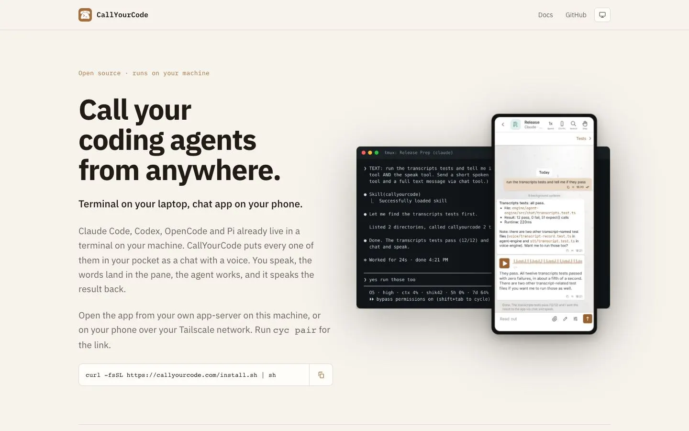
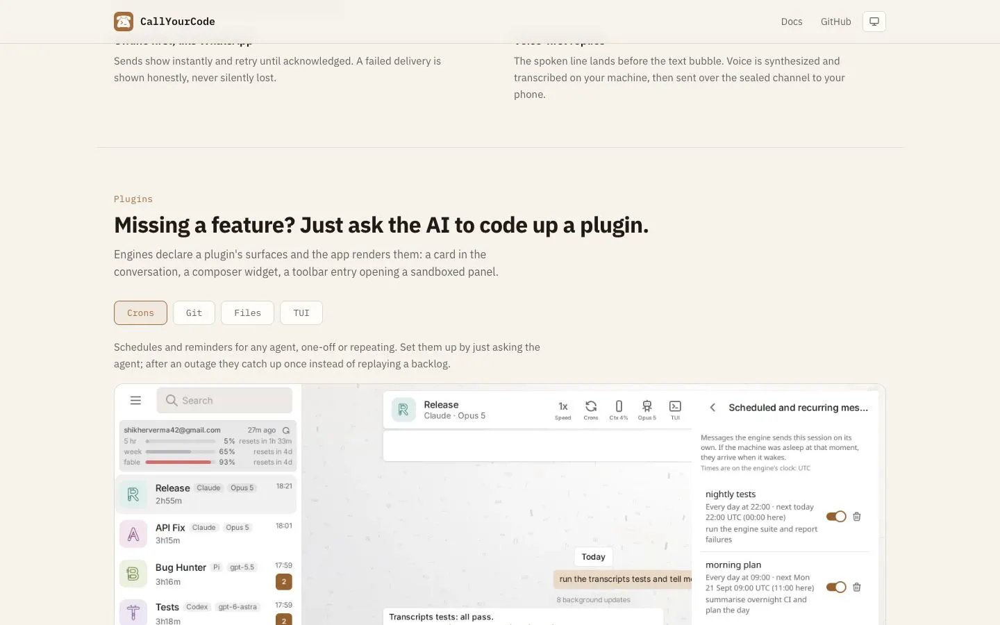
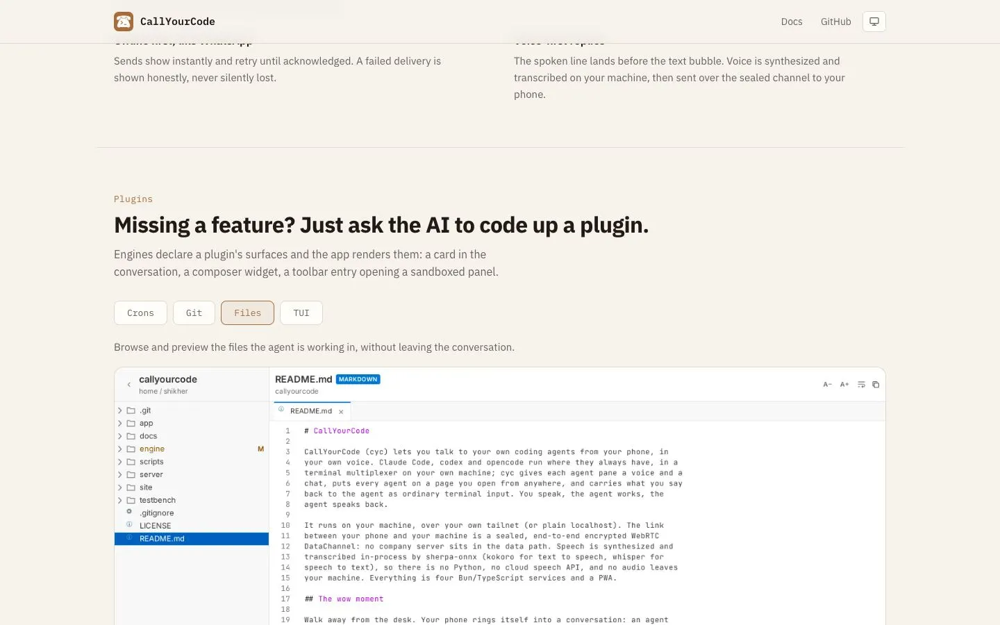

CallYourCode
Paper-toned developer site told through real app screens.
An open source tool that puts terminal coding agents such as Claude Code and Codex into a chat app on the phone, with voice.
Visit callyourcode.com

Design decisions
- Palette: warm paper (#F6F2EC) with dark brown text (#211B14) and a copper accent, closer to a notebook than the usual black developer site. Copper is saved for eyebrow labels, the selected tab and the app icon.
- Type: IBM Plex Sans for headlines and body, with IBM Plex Mono for eyebrow labels ('Open source · runs on your machine') and the install command, so code-flavoured lines are set apart by typeface as well as colour.
- Hero: a dark terminal window overlapped by a phone mockup of the chat, both showing the same request and result. One picture explains the product. The install command sits under the copy in a box with a copy button.
- Plugins section: pill tabs (Crons, Git, Files, TUI) each swap a one-line description and a full app screenshot below. The selected pill takes a copper tint and border; the others stay outlined.
- The tab screenshots are real app states, not illustrations: a schedule panel with toggles, a diff with added lines in green, a file tree with a README preview, and the live terminal pane.
- Feature groups such as 'The two freedoms' sit in one card split by hairline dividers, each column a short heading over a plain paragraph.
- Mobile: the header keeps only the icon beside Docs and GitHub, and the terminal-and-phone mockup scales down as one unit with the overlap intact.
On a phone
The flow, step by step




Further down the page